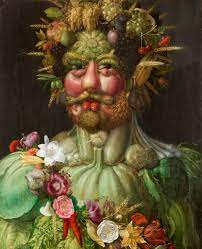
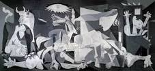

Vertumne
Artiste : Giuseppe Arcimboldo
Dimensions : 70 cm x 57 cm
Création : 1590–1591
Date : 1590
Dimensions (H × L) : 70 × 58 cm
Supports : Peinture à l'huile, Panneau
Vertumne, dont le nom signifie « tourner, changer », est le dieu des jardins et des vergers dans la mythologie romaine. 'origine étrusque, son culte fut adopté par les romains qui lui construisirent un temple à Rome, près du marché aux légumes et aux fruits dont il était le dieu tutélaire.
Le radeau de la méduse

Artiste : Théodore Géricault
Dimensions : 4,91 m x 7,16 m
Lieu d'exposition : Musée du Louvre
Création : 1818–1819
Période : Romantisme
Support : Peinture à l'huile
Genres : Peinture d'histoire, Peinture de marine
Le Radeau de La Méduse est l'œuvre la plus célèbre du peintre français Théodore Géricault. Elle est inspirée d'un véritable naufrage : celui de la frégate La Méduse échouée le 2 juillet 1816 au large de l'actuelle Mauritanie. Près de 150 passagers qui se trouvaient à bord furent contraints d'embarquer à bord d'un radeau de fortune.
La nuit étoilée

Artiste : Vincent van Gogh
Dimensions : 74 cm x 92 cm
Lieu d'exposition : Museum of Modern Art
Création : juin 1889–juin 1889
Sujet : Saint-Rémy-de-Provence
Support : Peinture à l'huile
Périodes : Postimpressionnisme, Art moderne
Van Gogh réalise sa Nuit Étoilée en juin 1889. La date est importante parce qu’elle s’inscrit dans une période difficile de la vie du peintre. Ce paysage, bien qu’il soit parsemé d’étoiles et propice à une atmosphère douce et sereine révèle-t-il en réalité un profond sentiment de désarroi ? Quelques mois plus tôt, Van Gogh, dont les pensées suicidaires s’intensifient radicalement, prend la décision de se faire interner dans un hôpital psychiatrique près de Saint-Rémy-de-Provence, quittant ainsi Arles pendant un an. Sa maladie influe sur son œuvre, comme en témoigne le tumulte de cette nuit mouvementée qu’il aurait peinte depuis sa cellule.
La joconde

Artiste : Léonard de Vinci
Dimensions : 77 cm x 53 cm
Création : 1503
Sujet : Lisa Gherardini
Lieu d'exposition : Musée du Louvre (depuis 1797)
Période : Renaissance
Support : Peinture à l'huile
L'une des peintures les plus emblématiques et reconnaissables au monde est la Mona Lisa (vers 1503-1519) peinte par Léonard de Vinci. L'attrait unique du portrait réside dans sa nature énigmatique, le sourire de Mona Lisa rayonne de mystère, de sensualité et de contentement. Ceci a été réalisé grâce au sfumato, la technique de peinture de Léonard qui adoucit la transition entre les couleurs. Cette profondeur et cette complexité d'expression sont la raison pour laquelle la Mona Lisa est considérée comme le summum du portrait. L'intérêt pour le portrait a été encore amplifié par son histoire mystérieuse : l'identité du modèle, qui a commandé le tableau, combien de temps Léonard a travaillé sur le portrait et comment il est entré dans la collection royale française sont tous des sujets de débat scientifique.
Guernica
Artiste : Pablo Picasso
Dimensions : 3,49 m x 7,77 m
Création : 26 avril 1937–juin 1937
Genre : Peinture d'histoire
Lieux d'exposition : Paris (1937–1937), Musée Reina Sofía
Périodes : Cubisme, Surréalisme
Sujet : Guerre, Guerre d'Espagne, Souffrance
Guernica est l'un des plus célèbres tableaux de Pablo Picasso. Le gouvernement républicain espagnol a commandé cette grande œuvre afin de représenter l’Espagne lors de l’Exposition Universelle de Paris en 1937. C’est à partir de cette demande que Picasso a imaginé et créé ce tableau.
La Naissance de Vénus

Artiste : Sandro Botticelli
Dimensions : 1,72 m x 2,78 m
Lieu d'exposition : Musée des Offices
Création : 1485–1486
Support : Tempera
Périodes : Renaissance, Renaissance italienne, École florentine, Première Renaissance
Support : Toile
On l’évoque comme étant l’un des nus les plus mythiques de l’Histoire de la peinture. Qui ne connaît pas La Naissance de Vénus signée Sandro Botticelli ? Ce chef-d’œuvre peint en 1485 revient sur un événement mythologique d’envergure : l’arrivée de Vénus à Chypre. Passons à la loupe cette grande figure féminine et cette scène devenue incontournable dans la culture contemporaine !
La Dernière Cène

Artiste : Léonard de Vinci
Dimensions : 4,6 m x 8,8 m
Lieu d'exposition : Église Santa Maria delle Grazie
Création : 1495–1498
Périodes : Renaissance, Renaissance italienne, Haute Renaissance
Supports : Tempera, Gesso, Mastic, Poix
Genres : Art chrétien, Peinture d'histoire
La Cène de Leonardo da Vinci (Cenacolo Vinciano) est l'une des peintures les plus célèbres du monde, réalisée entre 1494 et 1498 sous le gouvernement de Ludovico il Moro, et représente le dernier repas entre Jésus-Christ et ses apôtres. Pour réaliser ce travail unique, Leonardo a fait une étude approfondie en créant un nombre infini de dessins préparatoires. En abandonnant la technique traditionnelle de la fresque, l'artiste a représenté une scène « a secco » sur le mur du réfectoire. On a trouvé des traces des feuilles métalliques d’or et argentées y compris des détails précieux qui montrent bien la volonté de l’artiste de créer des personnages plus réels. La technique utilisée et l’environnement ont contribué à la détérioration de la fresque qui a été rénovée de nombreuses fois. La rénovation la plus récente remonte à 1999, on y a employé plusieurs techniques scientifiques pour restaurer les couleurs d’origine, et, dans la mesure du possible, pour supprimer les marques de peinture appliquées par les tentatives précédentes de restauration de la fresque.
Le Cri

Date : 1893
Artiste : Edvard Munch
Mouvement : Expressionnisme
Dimensions (H × L) : 91 × 73,5 cm
Localisation : Nasjonalgalleriet, Oslo
Le Cri (en norvégien : Skrik) est une œuvre expressionniste de l'artiste norvégien Edvard Munch dont il existe cinq versions (deux peintures, un pastel, un au crayon et une lithographie) réalisées entre 1893 et 1917. Symbolisant l'homme moderne emporté par une crise d'angoisse existentielle, elle est considérée comme l'œuvre la plus importante de l'artiste. Le paysage en arrière-plan est le fjord d'Oslo, vu d'Ekeberg. L'une des cinq versions a été vendue par Sotheby's à New York pour un montant de 120 millions de dollars. Elle détient ainsi, le 2 mai 2012, le record de vente d'une peinture aux enchères1. Elle est aujourd'hui, la cinquième plus chère œuvre vendue aux enchères2.